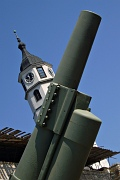
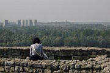
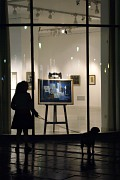
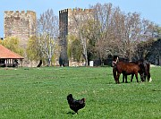
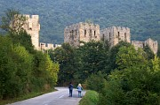

Disclaimer: These pages are not actively maintained, and some of the practical information on the site is out of date. I am working on a new version of the site that will focus more on my photos and memories of travel in Southeast Europe, and less on practical details that too easily become obsolete. In the meantime, please treat the information here with caution.


Three views of Kalemegdan
Belgrade
Introduction
Belgrade is a city for people who love cities. If you like your urban spaces to be pretty, quaint, or colourful, look elsewhere: Belgrade doesn't do pretty. If you like them to bear the obvious traces of a distinguished history, you may also be disappointed. Belgrade has as much history as any European city, but much of it is hidden to casual observers. What Belgrade does most successfully is provide a vibrant urban experience that is rare in the Balkans. In the course of my wanderings around Southeast Europe I have found myself in Belgrade several times; I've always been happy to arrive and sorry to leave.
What to see: some suggestions
Belgrade is defined by the confluence of the Danube and Sava rivers, giving the city centre a roughly triangular shape. At the apex of the triangle is Kalemegdan fortress, the ideal starting point for a tour of the city. Within the ramparts is one of the great city parks of Europe. At various points in its history, the view from the walls would have encompassed two countries or even two empire. These days Belgrade no longer stands at a political boundary, but still marks a geographical one. Looking down at the rivers, you can clearly see the line where the green Sava merges into the brown Danube. To the north the great plain stretches away into Central Europe; to the south you can see the beginnings of a much more typically Balkan landsape of forests and hills. To the west the tower blocks of New Belgrade attest to the explosive growth in the city's population after the Second World War.
Within Kalamegdan you can find carefully tended flower gardens, two monumental sculptures by Ivan Mestrović, a military museum, a couple of churches, countless pairs of lovers, a few loners perched on the battlements gazing pensively into the distance, and several older citizens selling ice cream from freezers - they always unwrap the ice-cream for you with an air of old-fashioned courtesy. At weekends you may come across impromptu circle dances accompanied by accordion music, and women selling an odd assortment of needlework and souvenirs of Serbia. The ultimate memento is a 500,000,000,000 dinar bank note from the hyperinflationary early 1990s.
Church of St Mark

Knez Mihailova
Next to Kalemegdan is Stari Grad, the "Old City" which in truth doesn't have many old buildings. Stari Grad is bisected by pedestrianised Kneza Mihailova Street. There are plenty of cafes where you can rest your feet and watch the beautiful people strutting their stuff along the length of the street. If you are looking for more cerebral pleasures, pop into one of the many bookshops along the street. Most of them stay open until 10 at night - a very civilised arrangement.
At the far end of Knez Mihailova from Kalemegdan is the commercial centre of modern Belgrade, a tangled knot of traffic, office blocks, and governmental buildings - now that Belgrade has ended up as capital of such a shrunken state, there must be a glut of administrative office space. The area doesn't have many specific sights, although some people are drawn to Knez Miloša Street to see the few remaining examples of destruction caused by the 1999 NATO bombings. A more uplifting sight is the Church of Saint Mark, built in the 1930s following the model of Kosovo's Gračanica Monastery.
While walking around Belgrade you can hardly fail to notice the immense dome of the Church of Saint Sava, which seems to hover over the city when seen from a distance. Work on the church began in 1935 and has stopped and started several times since. In the last few years considerable progress has been made, and the exterior is now complete. Clearly inspired by Hagia Sophia, the design seems lacking in specifically Serbian elements - I can't quite shake the feeling that it is disappointingly similar to Sofia's Alexander Nevski Church. Work continues on the interior, which is still quite bare. Even in its undecorated state it is worth a peek inside - it's not often you get the chance to see such a major religious building at this stage of its construction.

St Sava Temple

Sava River
Belgrade has the normal quote of museums and art galleries that you would expect from a capital city. One of the quirkier museums is dedicated to the life and work of the physicist Nikola Tesla, who very satisfactorily confirms all the stereotypes commonly held about brilliant but slightly unhinged genius inventors. Like many remnants of the former Yugoslavia, the museum poignantly conveys an impression of being futuristic and outdated at the same time. The hands-on demonstrations of some of Tesla's inventions were probably innovative when they were created, but the English-language leaflet I was given seemed to have passed through the hands of every foreign visitor since 1982. Hopefully some day the friendly and enthusiastic staff will obtain the funding they deserve. In the meantime the magically spinning egg, and various other sparking, crackling, and fizzing exhibits, will appeal to small boys of all ages.
Kalemegdan apart, central Belgrade doesn't have many large green spaces and come sometimes feel a little opressive. Escape to the other side of the Sava, where a footpath runs parallel to the Danube all the way to Zemun. It's usually busy with joggers and chess players by day, and visitors to the many floating restaurants by night. The tourist office runs 90-minute boat trips from outside the old Hotel Jugoslavia, with commentary in English. The guides seem to relish telling the story of the absurd number of sieges, sackings, bombings, and other catastrophes inflicted on the city in its eventful history.
More greenery can be found in a belt of parkland to the south of the city. A possible target for a stroll is the konak (mansion) of Prince Miloš, in Topčider Park, a modest but attractive building overshadowed by an out of control plane tree. Yugonostalgics, and others with an interest in twentieth century history, may also wish to visit the nearby mausoleum of Josip Broz Tito, also known as the House of Flowers. There are few flowers these days, and no signs to mark the way, but the building is open to (infrequent) visitors.
Practicalities
Although Belgrade is not yet served by many budget airlines, it is one of the most accessible places in the Balkans - indeed it is almost impossible to avoid on a tour of the region. Trains and buses go to almost all countries in Southeast and Central Europe, as well as just about everywhere in Serbia itself. If you can't find a suitable flight to Belgrade, Budapest is a useful airport to head for.
The main bus and train stations are located side by side on low ground beside the Sava. Note that the train station called "Centar" is not the main terminal. The low-rise bus terminal, called BAS or БАС, appears confusing at first but is actually well organised. When you buy a ticket, don't lose the token that gives access to the platforms - it can easily be confused with loose change. The arrival platforms are located across a small park from the main terminal - if you are surprised to find the place deserted when you arrive, that's the reason! Another nearby bus station, run by the Lasta company, serves only destinations close to the city such as Smederevo.
Surprisingly for a city of its size, Belgrade has never got around to building a proper metro. Trams and buses go everywhere, but are usually packed; taxis from anywhere other than the airport and train station are normally good value.
Tourist information is surprisingly easy to come by. As well as various online guides (see the Serbia Links page, there are a number of tourist offices in the city. The largest is in the underpass in front of the landmark Hotel Moskva; there is also a small branch in the train station. Maps of Belgrade and Serbia are also easy to find in the bookshops and stalls along Knez Mihailova.
Excursions from Belgrade
Belgrade's central location and excellent transport links make it a good base for exploring the northern half of Serbia. In addition to the destinations mentioned below, please see the page about Vojvodina for details about places to visit to the north of Belgrade - most are easily accessible on daytrips from the capital.
Oplenac Mausoleum, Topola

Smederevo Fortress

Manasija Monastery
Topola
The small town of Topola draws visitors because of its associaton with Karadjordje ('Black George'), the pig farmer who led the first Serbia uprising against Ottoman rule and is now regarded as one of the country's founding fathers.
Karadjordje is buried in the Church of St George on Oplenac hill just outside the town. The white marble church was built in 1912 at the behest of Kind Petar I, Karadjordje's grandson. The interior walls and ceiling are covered with copies of paintings from Serbia' mediaeval monasteries. The originals were frescos, but the copies are brightly painted mosaics. Foreign writers tend to be a little snooty about the mosaics' artistic value, and it's true that the first impression can be a little overwhelming and the copies lack the mystical power of the originals. But taken on its own terms the church is very impressive. And to be honest, after peering at faded and partially destroyed frescos in the dim recesses of many a monastery, I rather enjoyed the in-your-face colour of the Oplenac mosaics.
Karadjordje and Petar I are buried in tombs in the main part of the church. Down below in the crypt are yet more mosaics and the graves of other members of the Karadjordjević family. Judging by the number of empty tombs, Petar must have thought he was founding a long-lasting royal dynasty - surely a triumph of optimism over good sense for any Balkan monarch. I noticed one tombstone dated 2002, so presumably family members are still buried here.
There isn't a lot to see in Topola itself, other than a few remnants of Karadjordje's fortified residence, including a museum and a small church.
While you are in the area you could pay a visit to nearby Arandjelovac. This oddly elongated town is the source of the ubiquitous Knjaz Miloš mineral water. The spa in the centre of the town is surrounded by a large park dotted with more than sixty contemporary sculptures. Like the church in Oplenac they are made of white marble quarried locally.
Topola is served by 14 buses daily from Belgrade's main bus station (1.5 hours). There are also good connections between Topola and Arandjelovac, and from Arandjelovac to Belgrade (15 daily, 1.5 hours).
Smederevo
Smederevo, on the Danube bank a short distance downriver from Belgrade, is the site of Serbia's largest fortress. The 1.5 circuit of the outer walls, including 25 towers, held out against Turkish attacks for many years, but the citadel's eventual surrender in 1459 marked the definitive end of the mediaeval Serbian state. The castle was badly damaged in World War Two, but is still an impressive sight. When I visited, I found donkeys, chickens, and schoolchildren roaming the vast open space enclosed by the walls, giving the citadel a rather homely appeal.
Smederevo is less than an hour's journey by bus from Belgrade. These buses leave from the small Lasta bus station, across the road from the main BAS terminal.
Manasija
No trip to Serbia would be completely without visiting at least one mediaeval monastery. Manasija is one of the easiest to reach from Belgrade, and also one of the most impressive when seen from a distance. As you approach along the wooded Resava valley, the looming bulk of Manasija's eleven towers make it look more like a fortress than a religious institution; only fleeting glimpses of cupolas peeking above the battlements hint at the structure's true purpose. This defensive solidity reflect the threat from the Ottoman raiders who were already threatening the Serbian state's existence when Manasija was founded, somewhat later than most of the other mediaeval monasteries.
Once inside the walls, you may be able to climb to the battlements - ask for the key at the shop just inside the entrance. The view of the courtyard is dominated by elegant and simply decorated Holy Trinity Church. Although most of the interior walls of the church are now bare, the surviving frescos are still quite vivid. The three heavily armed Warrior Saints are especially striking, appearing ready to leap into battle at a moment's notice.
With your own transport Manasija is an easy daytrip from Belgrade, as it is located just off the main Belgrade-Niš road - about a two hour drive. You can also get there by taking a bus to the small town of Despotovac (3-5 daily, 2 hours) - but check timetables carefully if you want to return the same day, particularly at the weekend. It may be easier to spend a night in Despotovac, which has a couple of hotels. From Despotovac it is just a short walk to the monastery along a quiet road. Other attractions in this part of Serbia include the Resava Cave and Ravanica Monastery.
More photos of Belgrade in my Serbia Galleries
What they said about Belgrade ...
The Kalemegdan is the special glory of Belgrade and indeed one of the most beautiful parks in the world. Its ramparts and glacis shelter in their mellow bluish-rose brickwork a sequence of little flower-gardens, which stuff the old ravelins and redoubts with pansies and tulips and forget-me-nots. It is the prettiest and most courageous piece of optimism I know.
- Rebecca West, Black Lamb and Grey Falcon, 1942
I don't think its most chauvinistic zealot would pretend that it is beautiful. Much of its architecture verges on the nondescript. But its people are delightful: vivacious and energetic, hospitable and extremely independent, and they atone for what is really one of the drabbest of capitals.
- Claudio Magris, Danube, 1986
It is difficult to grasp the proteiform identity and extraordinary vitality of this incredible city which has been so many times destroyed, and so many times reborn, erasing all the traces of its past. The history and past of Belgrade do not live on in the few remaining monuments so much as in the invisible substratum, the epochs and civilizations crumbled like fallen leaves into the soil.
- J.A. Cuddon, The Companion Guide to Jugoslavia, 1968
Walking over the long, flat sweeps of green reaching to the two rivers, I have always felt the exciting sensation of stepping into a frontier region, of being at the edge of something.
- Robert Kaplan, Balkan Ghosts, 1993
Belgrade was the [Ottoman] empire martial, crenellated, bastioned, violent: so that as late as 1848, when a German visitor crossed the Danube his first impression of the city was of the castle, in a state of serious disrepair, but still garrisoned by Turks, though the whole country around was self-governing Serbia.
- Jason Goodwin, Lords of the Horizons, 1998
To those in the know, Belgrade is party city: a calm, dignified party that shows style, finesse, and an undeniable joie de vivre.
- Laurence Mitchell, Serbia - The Bradt Travel Guide, 2005
A reliving of memories for those who had once experienced it, and something completely different for the coming generation. The old fortress above the confluence of rivers - Kalemegdan, a bohemian quarter - Skadarlija, preserved the way it used to be over a hundred years ago, the vista from Avala, summertime at Ada Ciganlija, and much more whose existence has been forgotten in the last decade.
- the Slovenian Railways website in Yugonostalgic mood, 2006